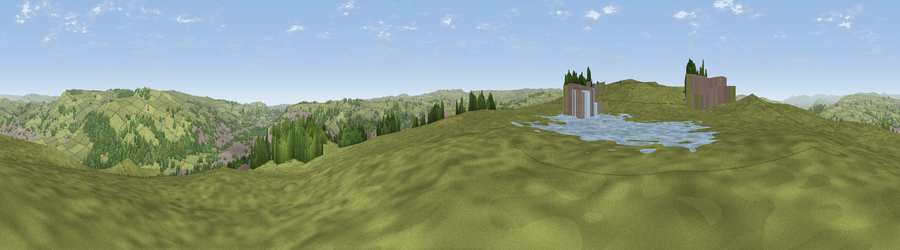

Viewpoint near Laycock
#13069 in England · top 15% of its area beats it · near LaycockThe view, rendered

A 360° render of this exact spot computed from the terrain model, tree cover and land cover — summer colours, afternoon light, calibrated against photographs of famous viewpoints. Real trees, hedges and buildings will differ in detail.
The panorama
Grey silhouette: terrain skyline in each direction (720 bearings, Earth curvature and refraction included). Dashed green: skyline with trees (+15 m) and buildings (+8 m) as obstacles. Blue strip: how far the ground is visible on each bearing.
Where the view opens
Wedge length = distance to the farthest visible ground on that bearing (vegetation-aware). Rings at 10, 25 and 50 km.
What fills the view
74% grassland · 15% woodland · 6% built-up · 4% water
Angular shares of the visible panorama (visual magnitude), not map area. Landscape diversity 0.36 (0–1 Shannon).
Key numbers
More beautiful places nearby
The staircase of upgrades: each row has a higher view potential than everything closer. Driving times are estimates from straight-line distance, calibrated against real road routing — check an actual route before setting out.
| Place | Direction | Drive | Score |
|---|---|---|---|
| Pinfold Hill | NE · 3 km | ~7 min | 62.6 |
| Viewpoint near Riddlesden | ENE · 4 km | ~9 min | 67.5 |
| Viewpoint near Addingham | NNE · 6 km | ~12 min | 68.9 |
| Viewpoint near Baildon | ESE · 10 km | ~20 min | 70.4 |
| Lad Law (Boulsworth Hill) | WSW · 13 km | ~24 min | 71.5 |
| Viewpoint near Embsay | NNW · 14 km | ~26 min | 74.5 |
| Viewpoint near Otley | E · 16 km | ~28 min | 77.5 |
| Darwen Hill | WSW · 42 km | ~61 min | 80.7 |
53.87756, -1.93950 · source: screening · position refined by local search. Computed location — check access rights before visiting.